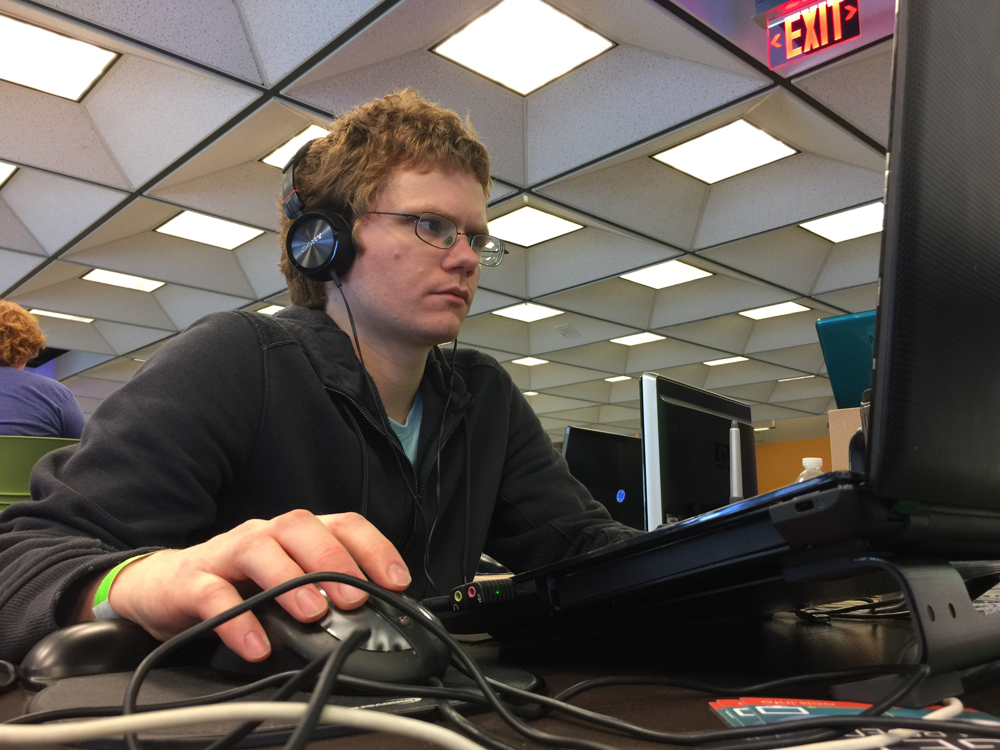
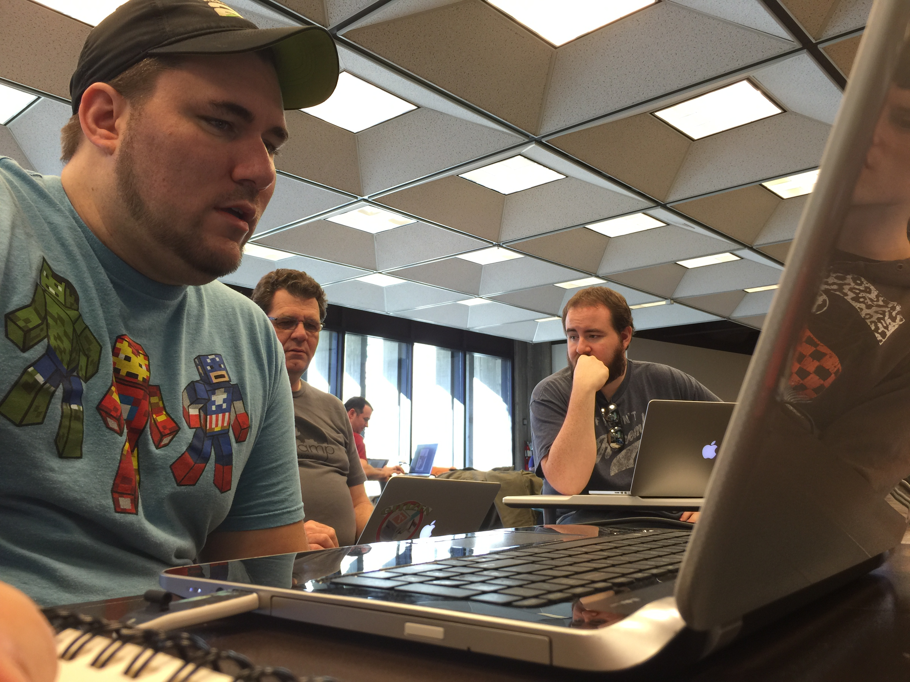
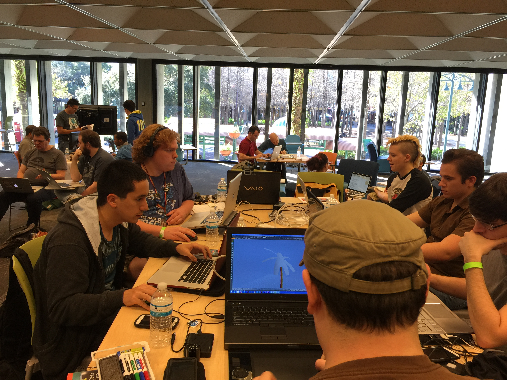

SundayThe team been making good progress incrementally. This is CRUNCH DAY! We will "Cross the Stream" and expect the Nexus of Creativity to fulfill our collective vision of a Virtual World for the player(s) to explore. Here is what we created together!
SaturdayAs we hear teams around us discussing (arguing?) about code in Unity3D, we have nothing to show yet. That is a bit frustrating. We are making some good progress with the Occulus, Leap and Myo devices, however. With 8 people working on Art, Models, Textures and Environment and now three coders (the team has grown since yesterday) I am confident we will have a high-quality product. At least it had better look good! <g>
  We have established a set of "rules" for the User Interaction (gestures) and are making some important decisions about which of the VR technologies to devote our time implementing.
FridayBeginning the evening of January 23, a group of twelve dedicated Indie Game Creators (The Dirty Dozen) committed themselves to create an immersive Virtual Reality experience in a weekend. The constraint of the Game Jam forced the team to focus and collaborate closely, in a very short time-frame in order to achieve a working product based on the theme assigned: "What do we do now?"
What do we do now? quite aptly portrayed the common mood in the Melrose Center when this theme was revealed. The agreed-upon game concept was dubbed vR-tifact by combining the Virtual Reality with Artifact.
Organiztion included the creation of a PMP (Chad), a Trello Board (Matt Parkin) and a git repository on GitHub (Thom Parkin). With these organizational tools established we all retired Friday night (actually very early Saturday morning), committed to begin again early on Saturday.